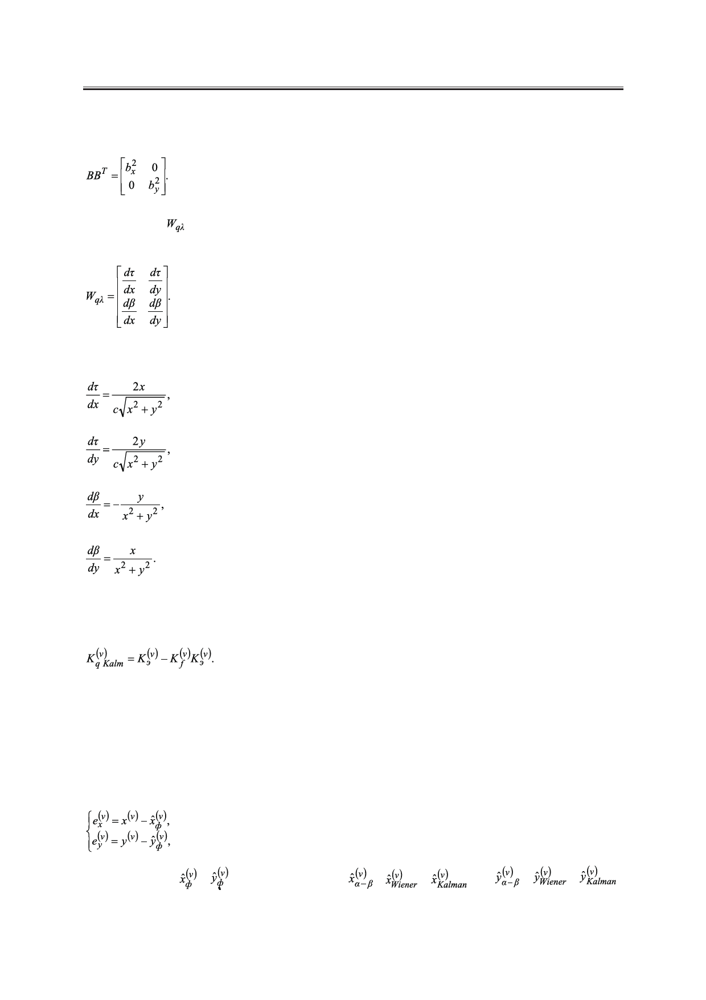

Б.А. Заикин
где B – матрица диффузии из (4):
(23)
Матрица – матрица первых частных производных первичных параметров по ко-
ординатам в точке экстраполяции на ν-ом шаге:
(24)
Найдем первые частные производные. Из (1) и (2) получаем:
(25)
(26)
(27)
(28)
В конце каждой итерации вычисляется матрица (17), которая в рассматриваемом слу-
чае примет вид:
(29)
3. Моделирование
Для моделирования необходимо задаться конкретными параметрами рассматривае-
мой системы, а также определить эффективные критерии оценки качества фильтрации.
Критерии качества фильтрации. В качестве простейшей оценки можно взять то-
чечную ошибку по каждой координате:
(30)
где в качестве , могут выступать ,
,
соответственно.
и
,
,
,
Российский технологический журнал 2017 Том 5 № 5
19